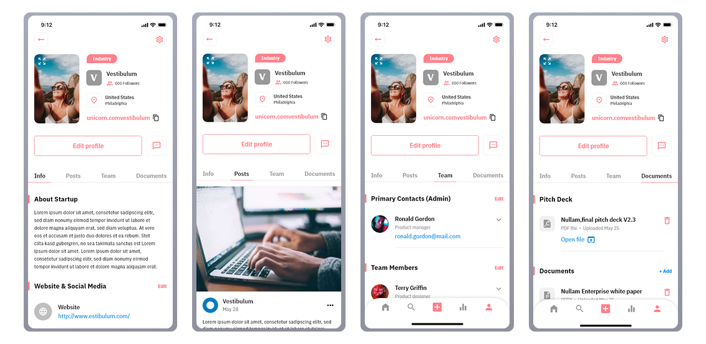

Pitch — Where founders
meet their investors
A 0→1 mobile platform connecting startup founders with accredited investors through curated video pitches. Designed end-to-end in 8 weeks across iOS and Android.
Product name changed for confidentiality.

02 — The Problem
The investment process was broken for both sides
Funding a startup shouldn't depend on who you happen to know or where you happen to live. But in 2021, for most founders and investors, it did. I started this project by understanding the scale of that frustration.
of startups will never receive funding — countless innovations are never developed
the average number of times a founder pitches before receiving any response
new startups launched in the US every year — most never reach the right investor
accredited investors in the US — spending hours daily on irrelevant deal flow
Great ideas were dying not because they lacked merit — but because founders had no visibility. Without the right connections, most never reached an investor who could help.
- Felt invisible — investors never saw their ideas, regardless of quality
- Geography limited access — funding hubs dominated by local networks
- Success felt like luck — not merit, not preparation
Investors weren't short on deal flow — they were drowning in it. Hours spent filtering irrelevant pitches meant the best startups were just as likely to be missed as found.
- Too much noise — couldn't filter for what actually matched their focus
- Time was the bottleneck — hours per day lost to irrelevant pitches
- Networking-dependent — the best deals came through personal connections, not merit
- Expensive to source — financial advisors and web services to find founders cost thousands a month
Key Research Insight
Both sides described the same broken system from opposite ends. Founders felt invisible. Investors felt overwhelmed. The real problem wasn't a lack of great startups or willing investors — it was that the right people never found each other.
This research became the north star for every design decision that followed. Rather than building another pitch directory, we needed to design a system of intelligent matching — one that surfaced the right founder to the right investor at exactly the right moment, removing geography, luck, and personal networks from the equation entirely.
03 — Users & Research
Two users, one shared need:trust
With no single existing platform solving the founder-investor connection problem, I analyzed three distinct products — studying what each did well and where each fell short. The goal wasn't to copy the best features, but to understand the design decisions behind them and identify the gaps Pitch needed to fill.
"I have something real — but I can't get in front of anyone who could actually fund it."
Core Needs
- Visibility — be seen by the right investors, not just local ones
- Speed — get a pitch live in under 24 hours
- Trust — know investors seeing their pitch are genuinely interested
"I spend hours reviewing pitches that have nothing to do with what I invest in. I need signal, not noise."
Core Needs
- Relevance — only see startups matching their industry and stage
- Efficiency — evaluate a startup in minutes, not hours
- Trust — know founders are vetted and serious before connecting
I deliberately chose three different types of platforms — a video platform, a direct competitor, and a professional network — because I wanted to understand the best-in-class experience for each core component of Pitch separately, then combine those learnings into one cohesive product.
What I Studied
- Video playback, comments, and creator profile structure
- How users discover and engage with video content at scale
- Notification and subscription interaction patterns
Gap for Pitch
Great video UX — but no structured professional context or trust signals for business relationships.
What I Studied
- Onboarding flow — how founders and investors register and set up profiles
- Profile structure — what information is collected and displayed
- How the platform facilitates connection between the two sides
Gap for Pitch
Heavy registration friction and limited filtering — investors couldn't easily find relevant startups.
What I Studied
- Registration and verification — how professional identity is established
- Search and filter — how users find relevant people and companies
- Profile completeness and trust-building patterns
Gap for Pitch
Strong on structure — but no video, no matching logic, and no startup-specific context.
Feature Gap Summary
| Platform | Video Pitch | Investor Matching | Vetted Access | Direct Messaging | Fast Approval | Anonymous Until Matched | AI/ML Vetting |
|---|---|---|---|---|---|---|---|
| YouTube | ✓ | ✗ | ✗ | — | ✓ | ✗ | ✗ |
| Pitch Investors Live | — | — | — | ✓ | ✗ | ✗ | ✗ |
| Orionis | ✗ | ✗ | ✓ | — | ✓ | ✗ | ✗ |
| Pitch ✦ | ✓ | ✓ | ✓ | ✓ | ✓ | ✓ | ✓ |
Research Insight
Every competitor solved one piece of the puzzle. YouTube nailed video but ignored trust. Pitch Investors Live had the right idea but created too much friction. Orionis built professional credibility but removed the human moment entirely. The missing design principle across all three was trust as a first-class feature — not an afterthought, not a legal checkbox, but the foundation every interaction was built on.
04 — Design Process
6 steps from brief
to dev handoff
This was a mixed-ownership process — some steps I led independently, others were shaped collaboratively with the CTO and VP of Experience. What mattered was knowing when to drive and when to align. Here's how it unfolded.

Step 01
Brief & product definition
Received the product brief from the founding team. I spent time understanding not just what to design but why this product needed to exist — the business model, the two user types, and the MVP scope. This context shaped every decision that followed.

Step 02
Competitive analysis & feature list
Analyzed YouTube for video UX patterns, Pitch Investors Live as a direct competitor, and Orionis for professional network structure. I wasn't looking for features to copy — I was mapping the white space Pitch needed to own.
In parallel, I reviewed the full 19-feature list with the CTO and VP of Experience — cross-referencing what competitors offered against what we were planning to build. This ensured our feature decisions were grounded in both market reality and technical feasibility.
Step 03
Sketching & low-fidelity flows
Sketched the full MVP — 19 features across 3 user types (Startup, Scout, Team Member). I used a color-coded system: purple for descriptions, blue for dev notes. Keeping sketches low-fi at this stage allowed fast iteration without attachment to visual details.

Step 04
Dev Q&A Interactions
Before moving to high-fidelity, I ran structured Q&A interactions with the dev team to surface technical constraints early. Questions ranged from data handling to interaction feasibility. 6 documented questions per interaction — each answered and signed off before proceeding.
Step 05
User flow handoff & UI design
Delivered annotated user flows to the development team — covering onboarding, sign-up, home, search, pitch video, messaging, statistics, and profile flows for all 3 user types. This became the single source of truth the dev team built from. Then worked closely with the UI designer to translate wireframes into high-fidelity screens using the Pitch brand system — ensuring every visual decision served the UX rationale.
Step 06
Real device testing & iteration
- 01 Installed the app on my own phone — tested every flow across both user types (Startup and Scout) as a real user would, not as the designer who built it.
- 02 Documented every issue found — written reports capturing what broke, what felt wrong, and what didn't match the intended UX. Shared directly in the project group with the dev team.
- 03 Discussed findings with the dev team — some issues were resolved in conversation, others required design changes. I stayed involved until each fix was confirmed.
- 04 Tested multiple build rounds — each fixed build was re-tested to confirm the issue was resolved and no new issues were introduced. Tracked fixes to completion.
Testing on a real device revealed things that no prototype or review session could catch — real load times, actual gesture friction, and edge cases that only appear in a live build. This round of real-device testing was the final quality gate before the product was handed off.
What this process taught me
The most valuable step wasn't the sketching or the UI — it was the Dev Q&A interactions. Surfacing technical constraints before high-fidelity work saved weeks of rework. If I could change one thing, I'd run those interactions even earlier — immediately after competitive analysis, before a single sketch.
05 — Key Design Decisions
Every decision had
a reason behind it
These aren't just feature changes — they're moments where research, technical constraints, and user needs collided and I had to make a call. Each decision was proposed by me and aligned with the team before implementation.
Fixed industry list — replacing free-text input
Onboarding — Startup setup, Step 3
The Problem
Founders were typing industry names freely — resulting in inconsistent entries, misspellings, and duplicate categories. An investor searching for "SaaS" would miss startups tagged "Saas" or "Software as a Service". The search was broken before it even started.
The Decision
Before
Free-text field — "add your industry" with open input
After
Fixed curated list — selectable categories, no free input
Why It Mattered
The dev team confirmed that free-text search across inconsistent categories was architecturally expensive to build reliably. Fixing the list solved both the UX error problem and the technical complexity in one decision.
Video cover selection screen
Startup setup — pitch video upload flow
The Problem
Without a cover selection step, the platform would auto-generate a thumbnail — often an unflattering mid-frame that misrepresented the founder or their pitch. First impressions on a video-first platform are everything.
The Decision
Before
Auto-generated thumbnail — no founder control over first impression
After
Dedicated cover selection screen — founder chooses the frame
Why It Mattered
Pitch is built on trust. An investor's first interaction with a founder is the video thumbnail. Giving founders control over that moment directly supported the core design principle — establishing trust before connection.
Complete system states for auth flows
Sign up & Sign in — all input and error states
The Problem
Early designs only showed the happy path — no error states, no loading indicators, no validation feedback. In a platform where trust is the core value, an unclear auth experience would undermine confidence before a user even reached the product.
The Decision
Before
Happy path only — no error, loading, or validation states
After
Full state coverage — error, loading, success, invalid input
Why It Mattered
Designing all system states is the difference between a prototype and a production-ready handoff. The dev team shouldn't be making UX decisions about what an error looks like — that's the designer's responsibility.
The thread connecting every decision
Every decision on this list came from the same place: reducing the cost of error — for users filling in forms, for investors evaluating pitches, and for developers interpreting designs. Good UX isn't just about the happy path. It's about what happens when things go wrong.
These decisions were proposed by me, discussed with the CTO and VP of Experience, and aligned before implementation. That process of proposal → discussion → consensus is what I bring to every project at senior level.
06 — Final UI
151 screens.
3 curated moments.
Out of 151 screens across 3 user types, these are the moments that best represent the product thinking behind Pitch — not just how it looks, but why each screen works the way it does.
What we built — and why
For Founders
Frictionless Registration
24-hour approval — founders go live fast without lengthy vetting delays
Curated Video Pitches
5-minute pitch videos matched to investors by industry and stage interest
Integrated Communication
Swipe to express interest, then message directly — no cold outreach
Cost Effective
Founders pitch free — flat-fee SaaS model for investors only
For Investors
Vetted Startups via AI/ML
NLP-powered vetting filters out noise before it reaches the investor feed
Chat Face-to-Face
Connect directly with founders after expressing interest — no intermediaries
Personal Analytics
Portfolio management dashboard with data on views, matches, and engagement
Filter & Connect
Anonymous until matched — investors stay private until they choose to connect
Moment 01
Home feed & pitch video — the core investor experience
The investor's home screen was the most critical surface in the product. Everything had to communicate trust and relevance instantly — startup name, industry tag, video thumbnail, and action hierarchy all competing for limited space on a mobile screen.

Design decision visible here: The action hierarchy places Like above Message — because an investor should express interest before initiating contact. This mirrors the trust-first principle: signal intent, then connect.
Moment 02
Statistics — giving founders real signal
Founders needed more than a pitch platform — they needed feedback on how their pitch was performing. The statistics screen gave them views, matches, and comparative data against other startups in their category.

Design decision visible here: Three tabs — Summary, Views, Compare — give founders progressively deeper insight. The Compare tab was intentional: showing performance relative to peers creates motivation to improve the pitch, which benefits investors too.
Moment 03
Founder profile — the full startup identity
The founder profile had to work as both a personal identity and a business card. It needed to show the pitch video, team, documents, and posts — all without overwhelming an investor who might be reviewing dozens of profiles.

Design decision visible here: The 4-tab profile (Info, Posts, Team, Docs) was designed so an investor could go as deep as they needed — or stop at Info if they already had enough context. Progressive disclosure keeps the experience light without removing depth.